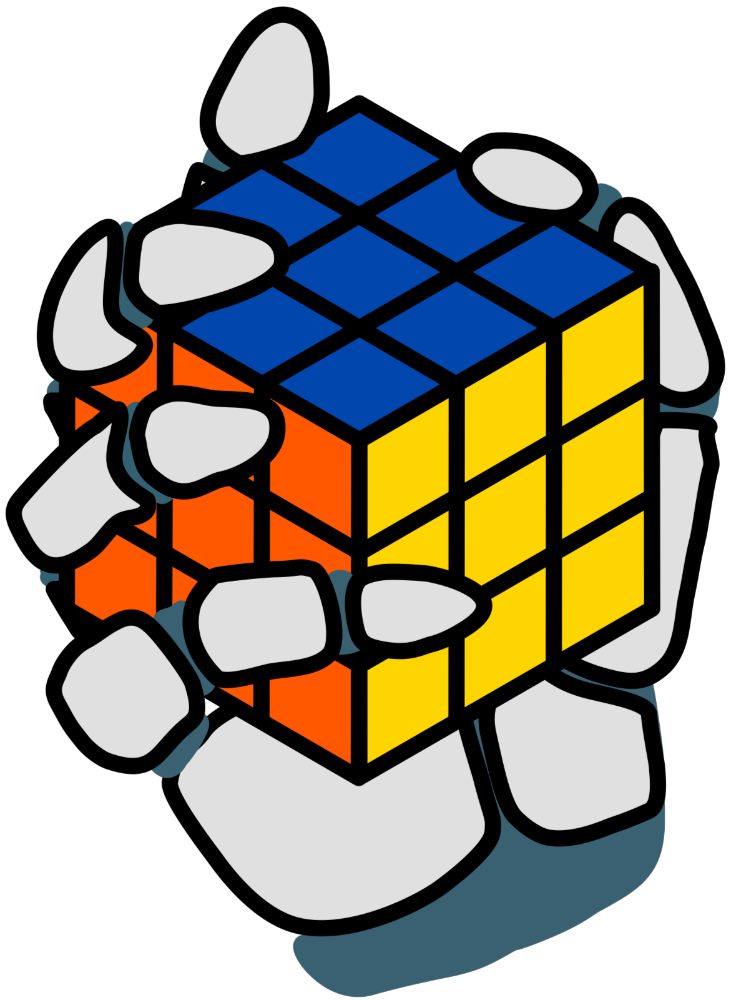
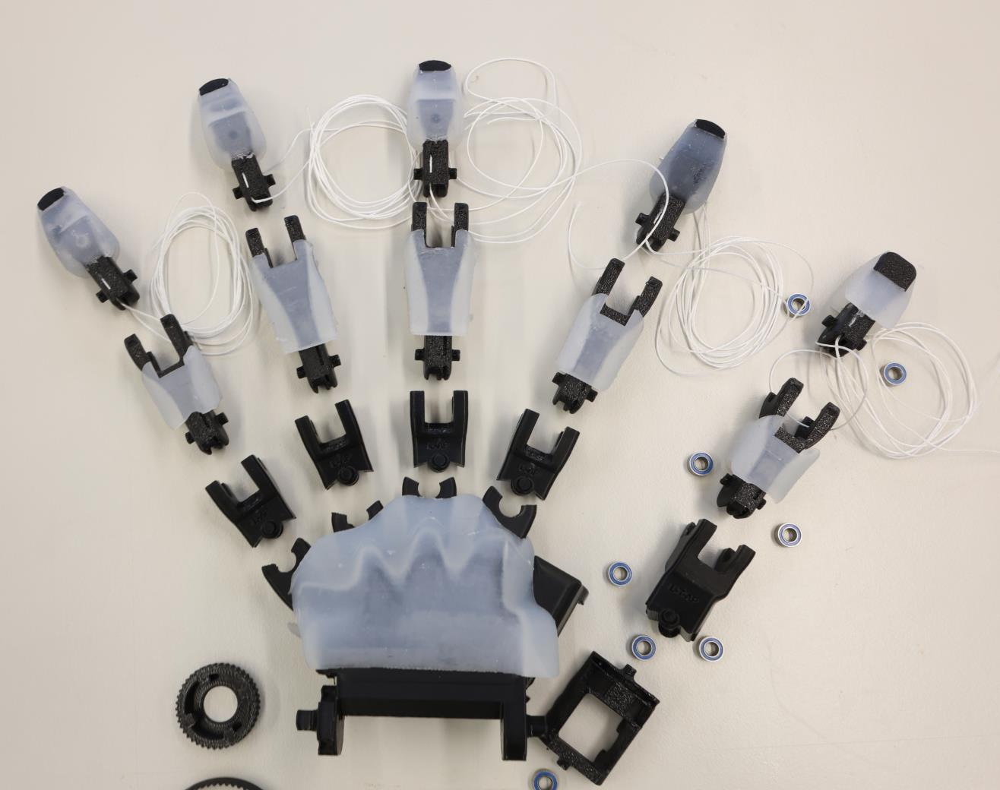
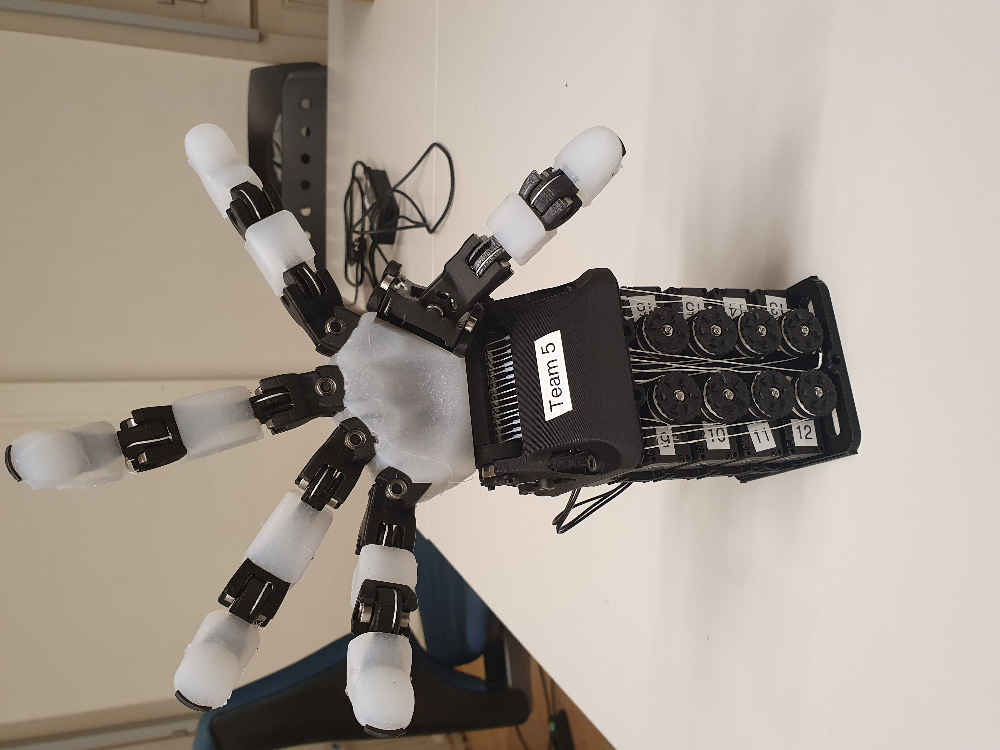

Real World Robotics · ETH Zürich · Team 5
Dexterous Manipulation with the ORCA Hand

Our work from the Real World Robotics lab course, exploring learning-based dexterous manipulation with the ORCA Hand through reinforcement learning in simulation, imitation learning, and our team's final project, human-in-the-loop RL to play Jenga.
Building the ORCA Hand
Hardware assembly
Each team assembled their own ORCA Hand from individual parts, including routing the tendons, wiring the electronics, attaching the silicone skin, and calibrating the actuators.


Reinforcement Learning in Simulation
Sim-to-real transfer
Training a policy to rotate a cube in-hand using reinforcement learning in simulation. This involved reward engineering, domain randomization, and evaluating different policy inputs. Characterizing the ORCA Hand's joint dynamics and applying sim-to-real transfer techniques enabled deployment on the real robot.
Imitation Learning from Demonstrations
Real-world pick-and-place
Pick-and-place task using imitation learning, where cubes have to be placed on their matching color. Demonstrations were collected via teleoperation, covering all cube colors and positions and including failure recovery cases. After evaluating different visual backbones and policy architectures, a Diffusion Policy with a DINO backbone performed best.
Learning to Play Jenga
Human-in-the-loop RL
Training a policy entirely in the real world to extract a target block from a Jenga tower using HIL-SERL. The policy learns through exploration and human interventions. As a bonus, SAM 3 was integrated to segment and highlight the target block from a single mouse click, removing the need for a physical marker. A separate imitation learning policy places the extracted block back on top.